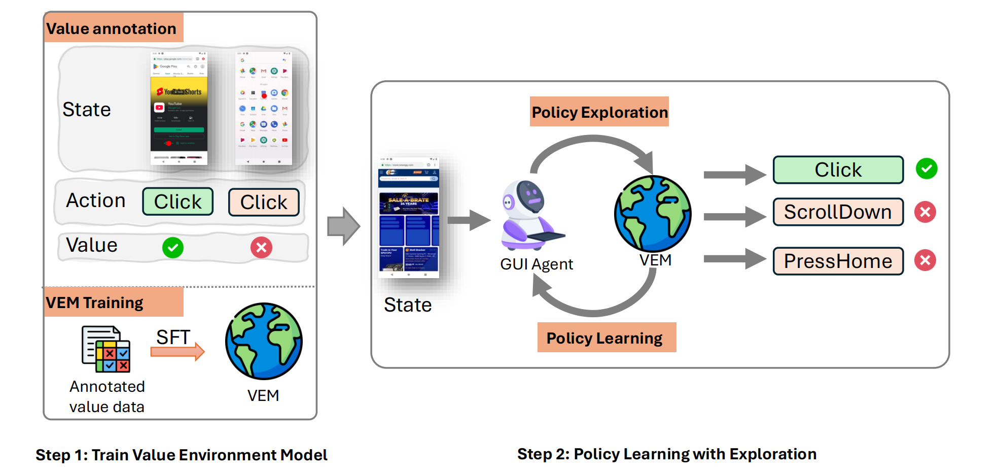

Training Vision-Language Models (VLMs) for Graphical User Interfaces (GUI) agents via Reinforcement Learning (RL) faces critical challenges: environment-based RL requires costly interactions, while environment-free methods struggle with distribution shift and reward generalization. We propose an environment-free RL framework that decouples value estimation from policy optimization by leveraging a pretrained Value Environment Model (VEM). VEM predicts state-action values directly from offline data, distilling human-like priors about GUI interaction outcomes without requiring next-state prediction or environmental feedback. This avoids compounding errors and enhances resilience to UI changes by focusing on semantic reasoning (e.g., “Does this action advance the user’s goal?”). The framework operates in two stages: (1) pretraining VEM to estimate long-term action utilities and (2) guiding policy exploration with frozen VEM signals, enabling layout-agnostic GUI automation. Evaluated on Android-in-the-Wild benchmarks, VEM achieves state-of-the-art performance in both offline and online settings, outperforming environment-free baselines significantly and matching environment-based approaches without interaction costs. Importantly, VEM demonstrates that semantic-aware value estimation can achieve comparable performance with online-trained methods.
BibTex Code Here